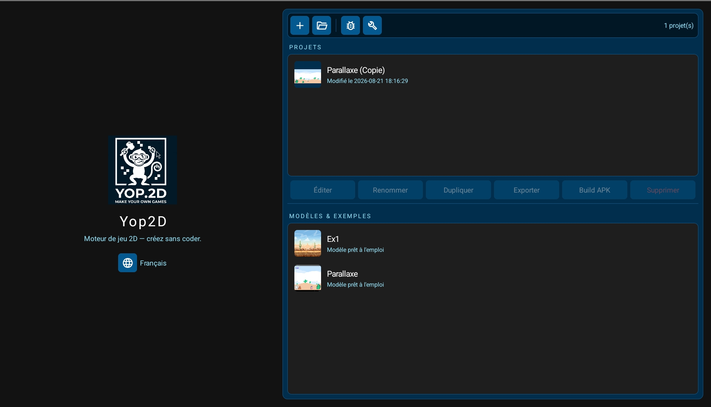
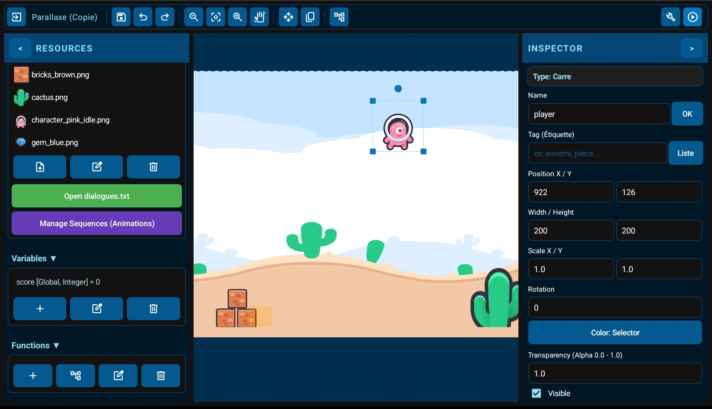
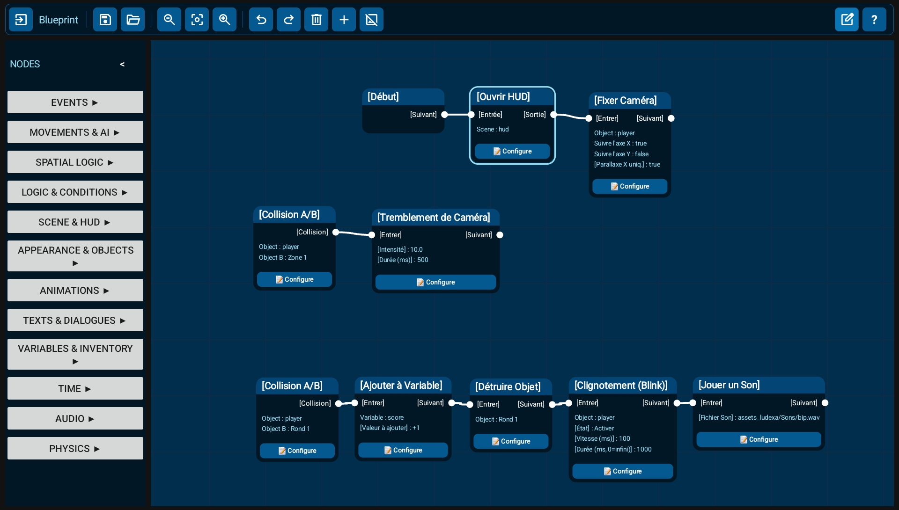
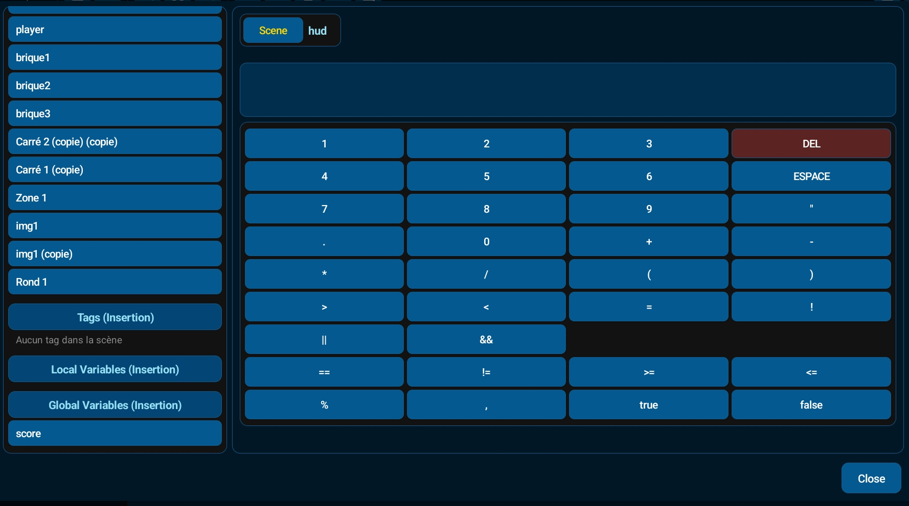

Project Management & Export

From the startup screen, keep an eye on your creations with auto-generated thumbnails. Explore the provided example projects to learn quickly. Yop2D handles the entire process: with a single click, build and export your game as a standalone Java APK file, without needing any third-party tools.
Visual Level Editor

Enjoy an interface inspired by industry standards, but streamlined and fully optimized for tablet ergonomics. The editor is packed with detailed settings to facilitate level design. Whether you want to design a fast-paced action game or a complex Escape Game, you have all the tools at your fingertips.
Blueprint System

Forget lines of code. Yop2D's Blueprint interface is designed for touch. Our highly verbose and descriptive nodes make game logic accessible to everyone, especially beginners or brands who struggle to memorize Java syntax. Assemble your logic visually and collapse entire series of nodes to keep your workspace clear.
The Brain of Your Games

When you select a node, this dedicated window opens to configure it without ever touching Java code. This is the true brain of Yop2D: link your objects, adjust your variables, trigger your custom functions, and manage your HUD, lists, and tags with ease.
Engine Capabilities
Logic & Events
Trigger actions on every frame, handle complex collisions, and listen to zone entries or exits.
Physics & AI
Enable physics, apply impulses, or set up entities to automatically chase or flee a target.
Inventory & Progression
Create deep mechanics using variables, check inventory items, and manage complete save points (checkpoints).
Tags & Interaction
Easily manage groups of objects using a robust Tag system, streamlining your collisions and events.
HUD & Joysticks
Quickly implement virtual joysticks, action buttons, and Heads-Up Displays (HUD) overlaying your active scenes.
Rich Dialogues
Utilize built-in list formats to manage and display complex text dialogues for your adventure games effortlessly.
Frequently Asked Questions
What is Yop2D?
Yop2D is a 2D game engine exclusive to Android. It allows anyone to create a complete video game through a visual interface (Blueprint), without any programming knowledge.
How much does Yop2D cost?
Yop2D is 100% free! You can create, build, and export your games without any hidden fees or subscriptions.
Do I need a PC or an internet connection to create games?
No! Yop2D is designed to be fully autonomous. You can build, test, and export your game entirely on an Android tablet or smartphone, 100% offline.
I can't remember Java syntax, is that a problem?
Not at all. While the games you export are built natively in Java, the engine replaces traditional coding with highly descriptive, verbose visual nodes. It's perfectly suited for beginners, kids, or anyone who struggles with raw code syntax.
Can I make 3D games with Yop2D?
No, Yop2D is strictly optimized for 2D game development to provide the best possible performance, accessibility, and simplicity on mobile devices.
Can I write text scripts for my game logic?
Text scripts in Yop2D are exclusively used for managing dialogue lists and translations. All interactive game mechanics and logic must be handled visually through the Blueprint node system.
How do I share my game once it's finished?
The engine compiles your project and generates a true standalone APK file that you can share with friends or publish on app stores, all directly from your device.